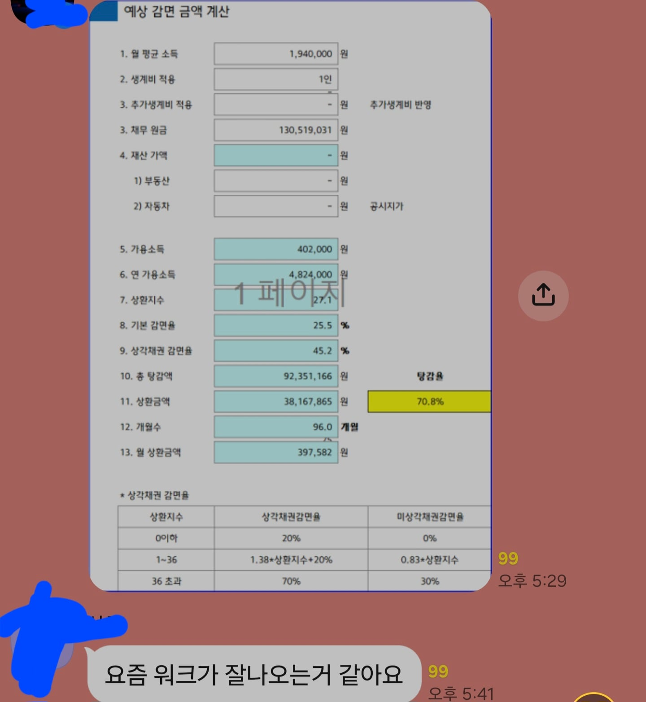

이렇게 살려주면 이제 제대로 살아야지가 아니라
또 해보고 안되면 회생해야지가 되는게 문제임
회생 완납하게 되면 신용도도 금방 회생전 수준으로 올라감
최근엔 1년정도 성실납부하면 공공기록삭제되게 바껴서
회생중에 신용카드도 발급되고 대출도 나옴
회생방 들어가보면 1번이상 회생하는 사람 수두룩함

이렇게 살려주면 이제 제대로 살아야지가 아니라
또 해보고 안되면 회생해야지가 되는게 문제임
회생 완납하게 되면 신용도도 금방 회생전 수준으로 올라감
최근엔 1년정도 성실납부하면 공공기록삭제되게 바껴서
회생중에 신용카드도 발급되고 대출도 나옴
회생방 들어가보면 1번이상 회생하는 사람 수두룩함
별로 안까다로음.
회생전문 변호사 사무실에 전화 한통만 하면 끝나
개소리마라 ㅋㅋㅋㅋ 전화한통만하고끝나면 그렇게쉽게하겠냐
니통장계좌내역 니 신용관련 모든 정보 다뽑아다기 변호사 보내줘야하고 인가받기전에 통장내용증명 해야하는거면 시발 3년전 통장에서 5만원빠져난거 증명해야함
동네 편의점알바만해도 가능한데 먼소리야 동네편의점알바중에 50대분들많은데 개인회생해서 어쩔수없이 하시는분들 많아
표 팔이 그 이상 이하도 아니지 뭐
저거 아무나못함ㅋㅋ
안정적인 직장다니면서 일단 변호사비만 수백듬
뭔 수백 ㅋㅋ 법무사한테 맡기면 100만원임
안정적직장: 편의점 기간제 근로자 이정도로도 가능
100은.아닐껄? 3~400 하지.읺을까?
최소 250들어 1달전 우리누나 개인회생한다고
250빌려줌
150은 딴데 썼겠지 ㅋㅋ
변호사비용이 그렇게 나왔다
우리누나 나쁜 사람 만들지마라
너는 법무사 말고 변호사 써서 그런거 아니냐?
법무사는 아니긴해 근데 세상사람이 다 합리적인건
아닌데 돈을 딴데 썼다 그러니깐 조금 화나네
사실 누나는 열심히 살았는데 누나 본가에서
어려우니 대출해주고 돈못받아서
삶이 어려워지니 개인회생 하는건데
그런 누나가 돈을 헛쓰지않는데
병신취급하니깐 살짝 꼭지가 돌았다
앞으로 좋은 일만 가득하길 바란다
ㅋㅋㅋㅋㅋㅋㅋ당햇누
왜케 잘못된정보를 퍼트리냐??? 편의점알바만해도 다되는데
까다롭고뭐고 안해주는게 맞는거 아닌가? 도박은 왜 감옥가는건데 ㅋㅋ
토토랑 코인주식이랑 회생법원에서 다르게봄 토토는 날려도 재산으로 잡지만 코인주식으로 다 날리면 그건 재산으로 안잡아서 탕감해줌
근면성실하게 사는놈이 죄다 죄 ㅋㅋ
회생을 평생에 한번 해주던가 해야지 무슨 마리오 1up 코인 먹어서 쓰는것도 아니고...
하 이런 새끼들한테 세금 낭비 그만하고 그걸로 고아나, 독거노인들한테 돌리면 참 좋겄는디
그러자 신기하게도 갑자기 부모가 살아있는 문서상 고아, 돈많은 자식이 있는 독거노인들이 대거 양산되는데
세금 들어가는거 아닌데
마인드가 다르네 쓰레기들 ㅋㅋ
내가 금융회사다녔는데 저런 신불자들 기록 삭제 안함 물론 겉으로는 한다고 하는데 내부 자료는 남겨둠
회생2번은 잘 안 해줄텐데..
걍 나라가 병신들 양산중임
빚갚으면 병신이라고 교육하는수준
시발 세금 걷어다가 뭔짓이냐
가끔 너무 불합리하다 느껴지면서도 저런애들이 인생 놓고 될대로 돼라 하고 살면 문제일거같기도 하고
회생이 1번이 아니였다고?
진짜 ㅂㅅ같은 정책이네
너도 한탕가즈아
겠냐
개빡치네
일때려치우고 한방에 몰빵해서 실패하면 3년간 집에서 있으면 된다 이거지? ..성공하면 좋은거고?
징집하자
군복무시켜


본인 부모년놈들땜에 대출해주다 개인회생했는데 개인회생이 존나 말이쉽지 쉬운게아님
일단 개인회생을 진행하려하면 변호사를 통하던가 본인이 셀프로해야하는데, 변호사 고용비도 기본 200-400사이임
100이렇게부르는건 ai변호사인가 앱전용으로하는거가 그정도함 그외 개인회생전용 변호사가 200-400사이임
개인회생을 시작하면 일단 니가 빛이있거나 카드연체가 시작되지? 몇주-1달정도는 크게 문제없다 그냥 대체로 전화로 갚으세용홍홍홍홍 하고끝이지만 2-3개월지나면 니연체기록은 신용에 문신새겨짐 개인회생종료하고 1년정도 이후까지
그리고 개인회생 진행하면서 금지명령 날라올때까지는 독촉전화 ㅈㄴ옴 금지명령뜨고나면 법적으로 압류/독촉 불가이긴한데 금지명령떨어지기전까지는 조오오온나 스트레스일거임 니가 빌린데가많을수록 연락오는데가 ㅈㄴ많을테니까
금지명령이뜨고나면 이제 개인회생개시결정이라고 본격적으로 시작임 변호사를위임했으면 그사람한테 니가 가진 모든채무 및 관련계좌 계좌내역 보내줘야함 니차 캐피탈이든 카드사든 어디든 할부끼고 산거면 그것도 보내줘야함 채무도 너의 재산이기에 모든 재산내역을 보내줘야함 이제 그걸보내주면 변호사가 얼마나 일을잘해줄지모르지만 내용보강해야할거 ㅈㄴ 연락할거고 ㅈㄴ수정하고 보내야함 이러고끝이냐?
변호사는 니가보내준 서류토대로 회생법원에 회생위원에게 전달할거고 이양반 채무는 뭐고뭐고 이거이거갚을거입니다 하고 계획서같은걸 보내면
채무자들(카드사/은행등등)은 존나 태클걸거임 너이거시발 왜결제한거임? 너왜 개인회생전에 변호사비 왜카드결제함?(실제로 변호사비 개인회생전에 카드결제하라고함ㅋㅋ) 등등 태클을걸거고 회생위원에서도 n년전 은행계좌내역에서 이거 얼마 나간거 왜쓴거임? ㅈㄴ쿠사리줄거고 이걸로 내용증명(간단)도해야함
그리고 모든 내용증명이 끝나고 채무자들의 태클이 없으면 개인회생 인가가뜸 말그대로 얘가 몇년동안 월 얼마버니끼최소 생활자금빼고 얼마얼마 갚아라 하는거를 시작하는거임
이과정이 끝나면 이제 독촉전화도없고 매달 꼬박꼬박 회생위원에게 돈만송금하면 끝임
대신 이 인가전에는 니가 직장이바뀌거나 소득이바뀌거나 이런일발생되면 일이 ㅈㄴ꼬이고 복잡해짐 인가전까지는 걍 뒤진듯이 조용히 살아야함
나같은경우는 개인회생결정부터 인가까지 딱 반년걸림 평균소모년이였음 이반년동안은 ㅈㄴ 스트레스고 일단 개인회생을 시작한이상 너는 신불자고 그어떤 신용카드 당연히못씀
나같이 부모랑엮어서 대출받다가 그거에 못이겨 개인회생하는부류들은 법원에서도 크게 태클걸거나 채무자(은행등 개인x)아닌데서는 크게 이의신청안넣음 근데
도.주.코 도박 주식 코인 이걸로 회생들어가는새끼들은 개인회생준비하는거면 지옥길 시작임 ㄹㅇ 도주코로 회생들어가는건 채무자들이나 법원에서 ㅈㄴ괴롭힐거임
나도 개인회생이나 했던입장에서 말해봐야 ㅈㄴ 우습긴한데,
개인 채무로 월 300벌던거에서 250을 원금이자 내는걸 5년넘게 하던거 정신병돌뻔하던거 월300에 생활자금 160빼고 140만 내게되서 말그대로 뒤질뻔하던거 살아남은거라…많이 힘들었음 지금이야 신용어느정도 회복하고 사람답게사는건데
개인회생 너무욕하지마라 도주코 이새끼들은 사람새끼들아닌데 그게아니면 개인회생은진짜 말그대로 사람하나 살려주는거라고 봐야함 나야 개인채무자들이없고 전부 은행/카드사라 막 깽판치고 그런건없었다만… 일반 개인채무자있는애들은 개인채무자꺼 먼저 갚아주고 개인회생하자
그리고 회생 n번하는새끼들은 회생하는사람중에서도 제일 병신새끼들이니까 상종하지말고 위에 톡방새끼들도 제정신아닌새끼들이니 상종하지말자
원샷으로 니계좌 다보고 4개보험의무가입 인하면 쥐어터지는세상인데 뭐든 한번 걸리면 쉽지않다
리세마라 달린다 회생마라 ㄱㄱ싱
저거 근데 조건 존~나게 까다롭긴함 일단 취직못한 쉬었음청년이 저러는건 불가능